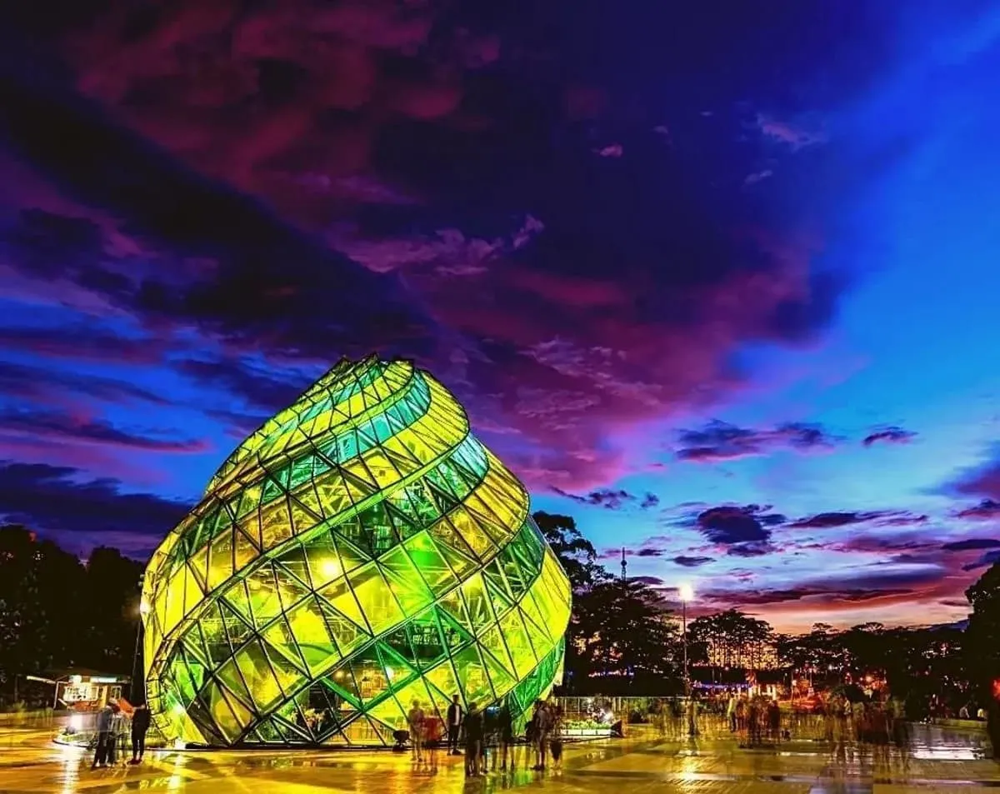
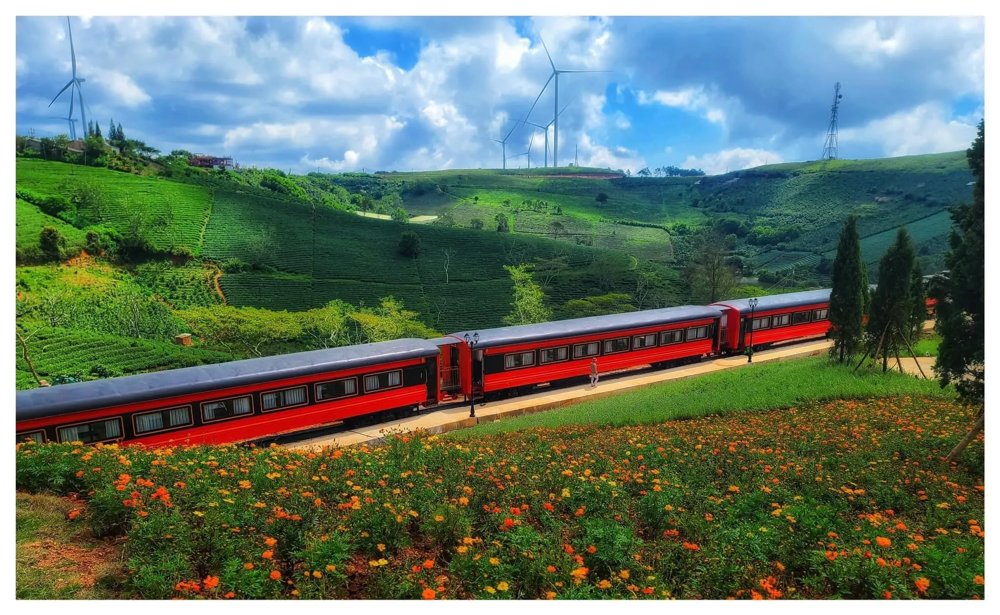
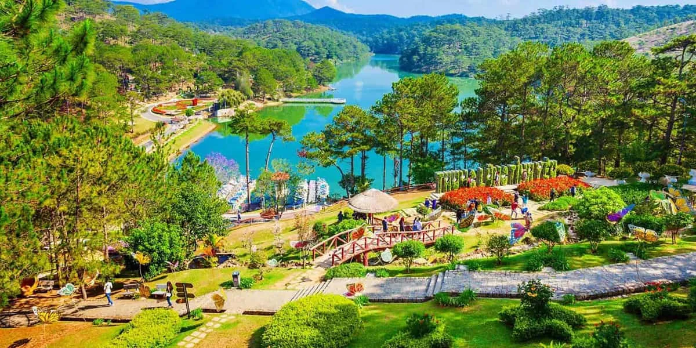
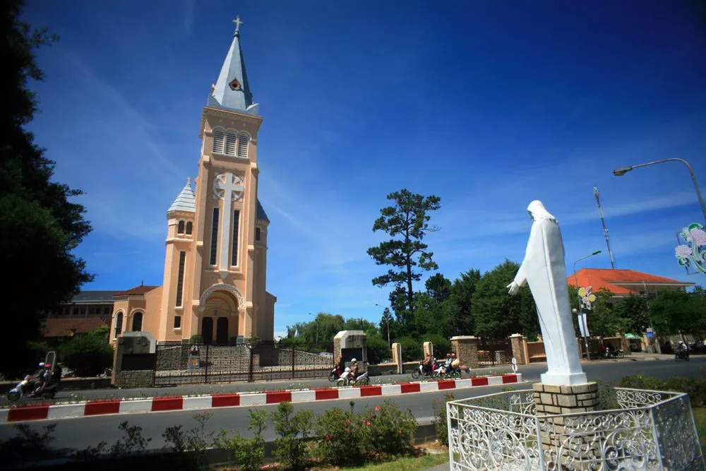
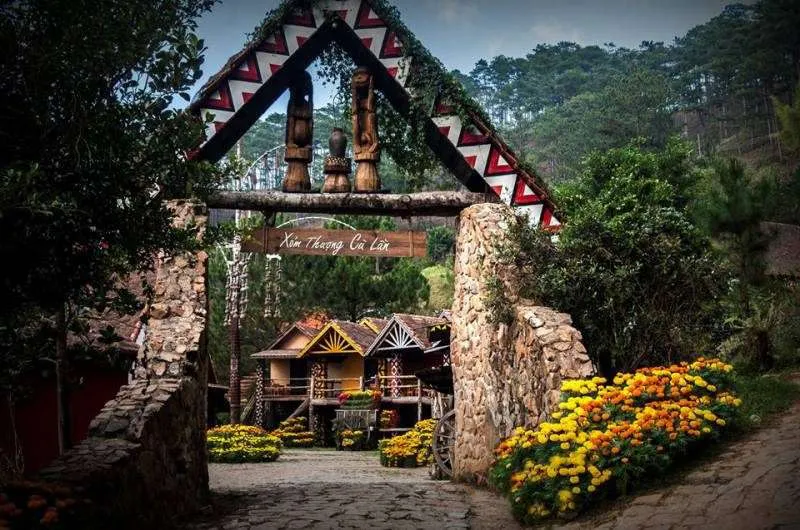
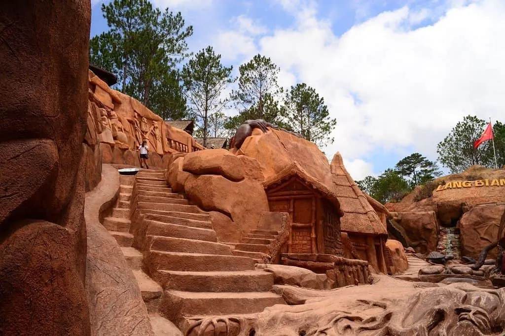

Đà Lạt chơi ở đâu? Khám phá 10 điểm đến hấp dẫn nhất 2025

Mục lục bài viết
- 1. Đà Lạt chơi ở đâu đầu tiên? Hãy bắt đầu tại Hồ Xuân Hương – Trái tim của thành phố
- 2. Đà Lạt chơi ở đâu để vừa ấm bụng vừa chill? Tiệm Nướng & Chill Xóm Lèo – Địa điểm lý tưởng cho tín đồ ẩm thực và sống ảo
- 3. Đà Lạt chơi ở đâu để tận hưởng thiên nhiên? Đồi chè Cầu Đất – Sắc xanh bất tận
- 4. Đà Lạt chơi ở đâu cho các cặp đôi? Thung Lũng Tình Yêu – Điểm hẹn lãng mạn
- 5. Đà Lạt chơi ở đâu về đêm? Đừng bỏ lỡ Chợ đêm Đà Lạt – Thiên đường ẩm thực
- 6. Đà Lạt chơi ở đâu để chiêm ngưỡng kiến trúc Pháp? Nhà thờ Con Gà – Biểu tượng cổ kính
- 7. Đà Lạt chơi ở đâu nếu yêu thích hoài niệm? Ga Đà Lạt – Nhà ga cổ kính nhất Việt Nam
- 8. Đà Lạt chơi ở đâu để hòa mình vào thiên nhiên? Làng Cù Lần – Bình yên giữa núi rừng
- 9. Đà Lạt chơi ở đâu để trải nghiệm mạo hiểm? Thác Datanla – Sức hút từ thiên nhiên hoang dã
- 10. Đà Lạt chơi ở đâu để khám phá nghệ thuật? Đường hầm đất sét – Kỳ quan từ đôi bàn tay con người
Đà Lạt – thành phố ngàn hoa giữa cao nguyên Lâm Viên, nơi sương mù giăng kín lối và những cơn gió lạnh se se len lỏi qua từng hàng thông, từ lâu đã trở thành điểm đến mơ ước của hàng triệu du khách. Vẻ đẹp mộng mơ, khí hậu dịu nhẹ quanh năm cùng những khung cảnh nên thơ đã khiến nơi đây mang một sức hút khó cưỡng. Đến Đà Lạt, bạn không chỉ được hòa mình vào thiên nhiên trong lành mà còn được sống chậm lại giữa nhịp sống hiện đại ngày càng vội vã.

Nếu bạn đang lên kế hoạch cho chuyến đi sắp tới mà vẫn còn phân vân Đà Lạt chơi ở đâu, thì đừng lo! Thành phố sương mù này sở hữu vô vàn điểm đến hấp dẫn phù hợp với mọi sở thích – từ những thắng cảnh thiên nhiên kỳ vĩ, công trình kiến trúc cổ kính, đến không gian ẩm thực và nghệ thuật độc đáo. Hãy cùng khám phá ngay 10 địa điểm cực hot dưới đây để có một hành trình đáng nhớ và trọn vẹn tại thành phố mộng mơ này nhé!
1. Đà Lạt chơi ở đâu đầu tiên? Hãy bắt đầu tại Hồ Xuân Hương – Trái tim của thành phố
Nếu ai hỏi nơi nào là “trái tim của Đà Lạt”, chắc chắn không thể không nhắc tới Hồ Xuân Hương. Nằm ngay trung tâm thành phố, hồ sở hữu vẻ đẹp dịu dàng, thơ mộng với mặt nước phẳng lặng được bao quanh bởi những hàng thông xanh và thảm cỏ mượt mà.
Tại đây, bạn có thể lựa chọn nhiều hoạt động thú vị:
-
Đạp xe đôi quanh hồ, tận hưởng không khí trong lành.
-
Chèo thuyền thiên nga – trải nghiệm lãng mạn cho các cặp đôi.
-
Dừng chân thưởng thức ly cà phê nóng tại các quán ven hồ với view tuyệt đẹp.
Hồ Xuân Hương chính là lời chào đầu tiên ngọt ngào và đáng nhớ mà Đà Lạt gửi đến du khách.
2. Đà Lạt chơi ở đâu để vừa ấm bụng vừa chill? Tiệm Nướng & Chill Xóm Lèo – Địa điểm lý tưởng cho tín đồ ẩm thực và sống ảo
Một trong những điều khiến du khách yêu mến Đà Lạt chính là ẩm thực độc đáo của nơi đây. Và nếu bạn đang tìm kiếm một không gian ấm cúng để “chill” cùng bạn bè trong tiết trời se lạnh, Tiệm Nướng & Chill Xóm Lèo chính là sự lựa chọn hoàn hảo.
-
Menu siêu hấp dẫn: Các món nướng được tẩm ướp đậm đà, kèm theo nước chấm đặc trưng và các loại đồ uống nóng phù hợp với khí hậu.
-
Không gian độc đáo: Thiết kế với tone màu ấm, nhiều góc “sống ảo” đậm chất Đà Lạt.
-
Dịch vụ thân thiện: Nhân viên nhiệt tình, không gian sạch sẽ, phù hợp cả nhóm bạn hoặc cặp đôi.
📍 Địa chỉ: 113 Huỳnh Tấn Phát, Phường 11, Đà Lạt
📞 Liên hệ: 076.45.27.336 – 08.99.42.84.34 – 0902.91.22.40
💬 Đặt Bàn: Tại Đây
📍 Chỉ Đường: Bấm để dẫn đường

3. Đà Lạt chơi ở đâu để tận hưởng thiên nhiên? Đồi chè Cầu Đất – Sắc xanh bất tận
Cách trung tâm Đà Lạt khoảng 20km, đồi chè Cầu Đất là địa điểm yêu thích của những ai đam mê chụp ảnh và muốn hòa mình vào thiên nhiên. Những luống chè trải dài, phủ xanh cả triền đồi, tạo nên một khung cảnh vô cùng thư giãn.
-
Thời điểm đẹp nhất là lúc sáng sớm khi sương còn phủ nhẹ và ánh mặt trời vừa ló dạng.
-
Bạn có thể mang theo máy ảnh hoặc thuê dịch vụ chụp ảnh chuyên nghiệp để ghi lại những khoảnh khắc tuyệt vời tại đây.
-
Ngoài ra còn có quán cà phê Cầu Đất Farm với view bao trọn cả thung lũng chè.

4. Đà Lạt chơi ở đâu cho các cặp đôi? Thung Lũng Tình Yêu – Điểm hẹn lãng mạn
Từ lâu, Thung Lũng Tình Yêu đã trở thành biểu tượng của sự lãng mạn ở Đà Lạt. Nơi đây sở hữu khung cảnh hữu tình với đồi thông xanh, hồ nước trong veo và hàng trăm loài hoa đua nhau khoe sắc.
-
Chèo thuyền thiên nga giữa hồ.
-
Dạo bước qua các tiểu cảnh như cổng trái tim, cầu khóa tình yêu, đường hầm hoa.
-
Chụp ảnh cưới hoặc ảnh đôi cực “nghệ”.
Với không gian rộng rãi và dịch vụ du lịch chuyên nghiệp, Thung Lũng Tình Yêu là địa điểm không thể bỏ qua cho những ai đang yêu hoặc đơn giản là muốn tìm lại sự yên bình.

5. Đà Lạt chơi ở đâu về đêm? Đừng bỏ lỡ Chợ đêm Đà Lạt – Thiên đường ẩm thực
Khi màn đêm buông xuống, thành phố Đà Lạt khoác lên mình vẻ lung linh khác lạ. Chợ đêm Đà Lạt là nơi tụ họp đông đúc, náo nhiệt nhưng vẫn giữ được nét duyên dáng riêng biệt.
-
Các món ăn vặt nổi tiếng như bánh tráng nướng, xiên que, bắp nướng mỡ hành, khoai lang nướng,…
-
Thức uống đặc trưng như sữa đậu nành nóng, trà gừng.
-
Nhiều gian hàng bán đồ len, quà lưu niệm, đặc sản địa phương với mức giá hợp lý.
Chợ đêm là nơi tuyệt vời để vừa thưởng thức món ngon, vừa hòa mình vào không khí sôi động của Đà Lạt về đêm.

6. Đà Lạt chơi ở đâu để chiêm ngưỡng kiến trúc Pháp? Nhà thờ Con Gà – Biểu tượng cổ kính
Nhà thờ chính tòa Đà Lạt, thường gọi là Nhà thờ Con Gà, là một công trình kiến trúc cổ điển mang phong cách châu Âu, được xây dựng từ thời Pháp thuộc. Sở dĩ có tên như vậy vì trên đỉnh tháp chuông có tượng một con gà lớn – biểu tượng của sự cảnh tỉnh.
-
Nơi đây không chỉ thu hút khách du lịch mà còn là điểm đến tâm linh cho nhiều người dân địa phương.
-
Bức tường hồng cam, khung cửa vòm và sân vườn cổ kính rất lý tưởng để chụp ảnh theo phong cách cổ điển, vintage.

7. Đà Lạt chơi ở đâu nếu yêu thích hoài niệm? Ga Đà Lạt – Nhà ga cổ kính nhất Việt Nam
Ga Đà Lạt là một trong những công trình còn sót lại từ thời Pháp và được xem là nhà ga cổ nhất Việt Nam. Với mái ngói hình chóp, màu sơn vàng đặc trưng và toa tàu cổ kính, nơi đây là điểm check-in không thể thiếu cho những ai yêu thích nhiếp ảnh.
-
Du khách có thể mua vé để trải nghiệm chuyến tàu ngắn từ Ga Đà Lạt đến Trại Mát – đi qua các làng quê, rừng thông rất thi vị.
-
Xung quanh ga còn có nhiều quán cà phê vintage, cực thích hợp để nghỉ chân.

8. Đà Lạt chơi ở đâu để hòa mình vào thiên nhiên? Làng Cù Lần – Bình yên giữa núi rừng
Ẩn sâu giữa rừng thông, Làng Cù Lần là ngôi làng nhỏ mang vẻ đẹp hoang sơ, nơi du khách có thể thật sự “trốn khỏi” phố thị để tận hưởng thiên nhiên.
-
Chèo thuyền kayak trên suối.
-
Đi xe jeep khám phá rừng thông, suối đá.
-
Tham gia hoạt động dã ngoại, cắm trại, tổ chức teambuilding.
Không chỉ là điểm đến cho những ai yêu thiên nhiên, Làng Cù Lần còn phù hợp cho nhóm bạn, gia đình muốn trải nghiệm điều mới mẻ và gần gũi.

9. Đà Lạt chơi ở đâu để trải nghiệm mạo hiểm? Thác Datanla – Sức hút từ thiên nhiên hoang dã
Đà Lạt nổi tiếng với nhiều con thác đẹp, nhưng nếu nói về các hoạt động mạo hiểm thì thác Datanla là cái tên hàng đầu. Nằm cách trung tâm chỉ khoảng 5km, nơi đây là điểm dừng chân cho những ai muốn “vượt giới hạn” bản thân.
-
Trượt máng – trò chơi gây nghiện, phù hợp với mọi lứa tuổi.
-
Leo dây vượt thác – dành cho người ưa mạo hiểm.
-
Cáp treo xuyên rừng thông, ngắm toàn cảnh hùng vĩ của thiên nhiên.
 Ảnh: Thác Datanla Đà Lạt chơi ở đâu
Ảnh: Thác Datanla Đà Lạt chơi ở đâu
10. Đà Lạt chơi ở đâu để khám phá nghệ thuật? Đường hầm đất sét – Kỳ quan từ đôi bàn tay con người
Khác biệt hoàn toàn so với các điểm du lịch truyền thống, đường hầm đất sét là một công trình nghệ thuật khổng lồ được điêu khắc hoàn toàn bằng đất sét bazan. Dọc theo con đường dài hơn 1km là những mô hình mô phỏng lại lịch sử Đà Lạt, văn hóa Tây Nguyên và nhiều biểu tượng hiện đại.
-
Điểm nhấn đặc biệt là Hồ Vô Cực – nơi được mệnh danh là “thánh địa sống ảo” với view núi rừng và mặt hồ phản chiếu.
-
Không gian thích hợp cho cả gia đình, nhóm bạn, cặp đôi.

Với hàng loạt lựa chọn từ thiên nhiên thơ mộng, kiến trúc cổ kính, đến không gian nghệ thuật và ẩm thực hấp dẫn, câu hỏi “Đà Lạt chơi ở đâu?” chắc chắn không còn làm khó bạn. Hãy lên kế hoạch thật kỹ, chọn những điểm đến phù hợp với sở thích và đừng quên ghé Tiệm Nướng & Chill Xóm Lèo để bữa ăn của bạn cũng trở thành một phần đáng nhớ trong chuyến đi này.